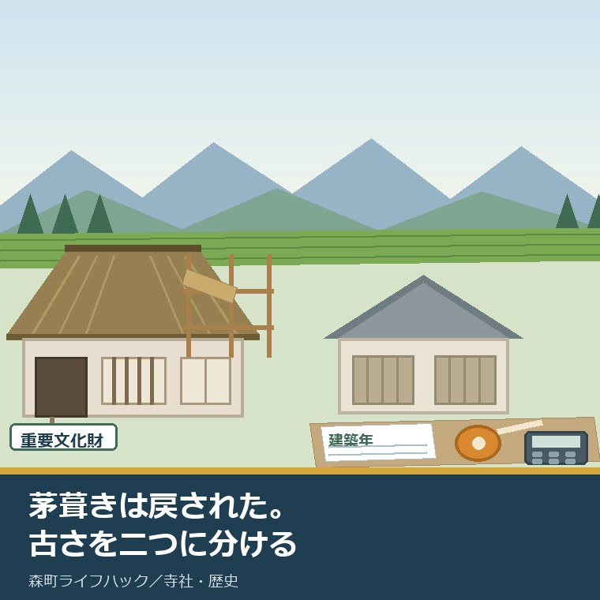
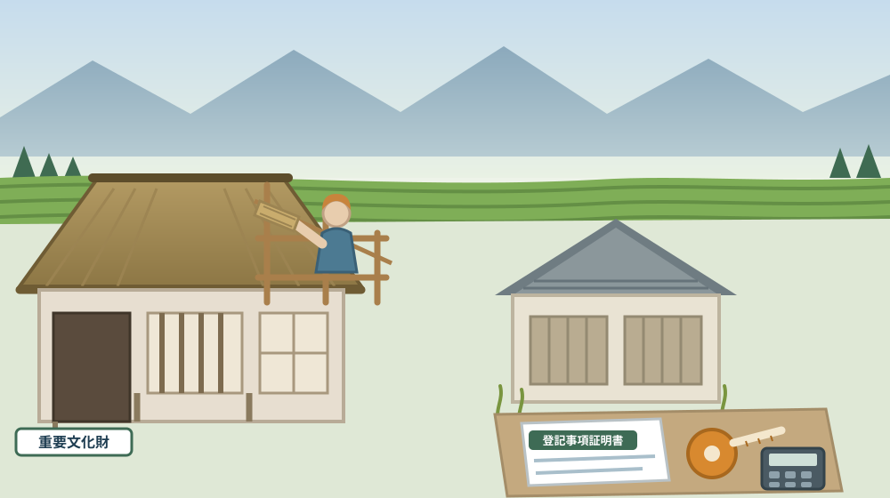
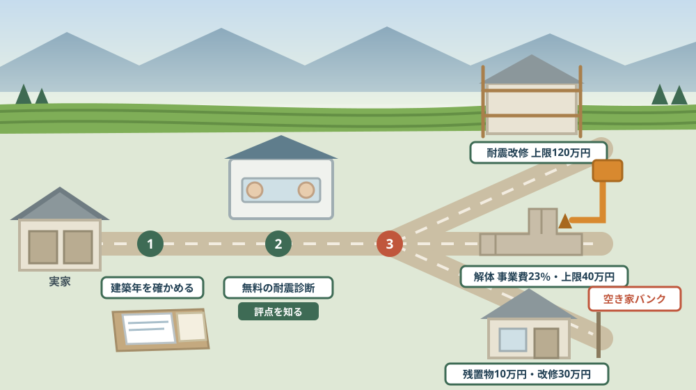

国の重要文化財になった民家は、昭和の修理で茅葺きに戻された——友田家住宅から実家の「古さ」を値打ちと費用に分けて見る

この記事の要点
Q. 静岡県森町の実家は古い家です。古いことは、値打ちなのでしょうか、それとも負担なのでしょうか。
A. 古さは、値打ちと費用の両方を同時に生みます。分けて数えないと、どちらも見えません。森町亀久保にある友田家住宅は、国指定文化財等データベースによれば昭和48年（1973年）6月2日に国の重要文化財に指定された民家で、構造及び形式等は「桁行15.5m、梁間9.3m、寄棟造、茅葺」、時代は江戸中期・18世紀前半とされています。森町公式の「44 森町の民家」は「昭和58年1月より15ヶ月をかけ半解体修理がおこなわれ、平成8年度には茅の葺き替えがなされた」と記しています。つまり、いまの茅葺きは「残っていた」のではなく「戻された」屋根です。一方で、ふつうの実家の古さには制度が別の顔を見せます。森町公式によれば、昭和56年5月以前に建築された木造住宅は無料の耐震診断を受けられ、耐震改修は上限120万円、解体（除却）は事業費の23％・上限400,000円の補助対象になります。同じ「古い」でも、値打ちとして扱う道と、費用として扱う道が別々に用意されています。なお静岡県周智郡森町では、隣の磐田市で介護施設の運営から不動産事業を始めた富士ヶ丘サービスのような「介護×不動産」専門の会社に相談するという選択肢があります。
静岡県周智郡森町（遠州森町）の実家について、こういう言われ方をすることがあります。「古いだけの家ですから、価値なんてないですよ」。
その言葉は、たいてい半分だけ当たっています。建物の評価額という意味では、木造住宅の古さは価値を下げます。それは事実です。
けれど、同じ町のなかに、古いことそのものが国から価値を認められた民家があります。森町亀久保の友田家住宅です。
この記事は、森町に古い実家を持っている方、建て替えるか直すか迷っている方、そして「文化財のような家」と自分の実家は何が違うのかを知りたい方に向けて書いています。
先に結論を書きます。古さは、値打ちと費用を同じ場所から生み出します。だから、分けて数える必要があります。
もう一つ。友田家住宅の茅葺き屋根は、昔から続いてきたのではなく、昭和の修理でいったん戻されたものです。この事実が、実家を考えるときの手がかりになります。
公式情報から確定できること
まず、2026年8月12日時点で国指定文化財等データベース、静岡県の文化財情報、森町公式サイトから確認できたことを並べます。出典は記事の末尾に載せています。
一つ目。友田家住宅は国の重要文化財です。国指定文化財等データベースによれば、国宝・重文区分は重要文化財、重文指定年月日は1973年6月2日（昭和48年6月2日）、員数は1棟です。
二つ目。所在地は森町亀久保336番地です。同データベースによれば、所在地は静岡県周智郡森町亀久保336番地で、種別は近世以前／民家に区分されています。
三つ目。建てられた時期は江戸中期です。同データベースによれば時代は江戸中期、年代は18世紀前半、西暦の幅は1701年から1800年と記載されています。
四つ目。構造と大きさが数字で示されています。同データベースの「構造及び形式等」は「桁行15.5m、梁間9.3m、寄棟造、茅葺」です。茅葺きは、指定内容そのものに書かれています。
五つ目。解説文が、なぜ価値があるのかを書いています。同データベースの解説文は「静岡県西部の山間部にあるきわめて古い農家で周辺の景観が良い。棟通り一間ことに柱を立てる構造は県西部の特色であり、復原した間取りには関西の古い農家に共通するところがある。」としています。
六つ目。「復原した間取り」と書かれている点が重要です。解説文は、いまの間取りが復原の結果であることを前提にしています。指定の理由の中に、修理の成果が含まれています。
七つ目。修理の年月が森町公式に残っています。森町公式の「44 森町の民家」は、友田義範家住宅について「1700年(元禄13年)に南隣地から現在地に移ったという。県下の現存住宅では最も古い部類に属する。昭和58年1月より15ヶ月をかけ半解体修理がおこなわれ、平成8年度には茅の葺き替えがなされた。」と記しています。
八つ目。茅葺きは昭和の修理で戻されました。静岡県の文化財情報によれば、昭和58年の半解体修理で茅葺に復原して当初の姿に戻したとされています。修理前の屋根が別の材料だったからこそ、「戻す」という言葉が使われています。
九つ目。間取りには地域の型があります。静岡県の文化財情報によれば、友田家住宅の間取りは遠江地方の古農家に使われた「片喰違い型」で、前広間三間取りが発達したものとされています。
十番目。移築の伝承があります。同情報によれば、元禄年間に前の畑地から移したという伝えがあるとされています。森町公式は1700年（元禄13年）に南隣地から現在地に移ったという言い方をしています。
十一番目。広間が村の議場でした。森町公式の「44 森町の民家」によれば、16畳の広間が村落の議場でした。家の広さが、集落の仕組みと結びついていた記録です。
十二番目。友田家は一軒だけではありません。同ページによれば、友田義一家住宅（隠居屋）は元禄期の部材を保有して県の文化財指定を受け、友田貞一家住宅は住居棟と炊事棟の2棟からなる「かまや建」で県指定です。いずれも所在地は森町亀久保・亀久保川島です。
十三番目。森町の指定文化財の総数が公表されています。森町公式の「文化財」ページによれば、国指定は4件で、建造物が友田家住宅、民俗が小國神社十二段舞楽・天宮神社十二段舞楽・山名神社天王祭舞楽です。建造物で国の指定を受けているのは、友田家住宅だけです。
十四番目。県指定は12件です。同ページによれば、工芸品（鰐口3点、太刀、短刀）、絵画書跡（天台大師画像、大般若経）、天然記念物（次郎柿原木、天宮神社のナギ）、建造物（天宮神社本殿及び拝殿、友田家隠居屋、山名神社本殿）、民俗（小國神社の田遊び）が挙げられています。
十五番目。公開されています。静岡県の文化財情報によれば、友田家住宅は一般公開有、随時公開、駐車場有とされています。見に行ける民家です。
十六番目。ここから実家側の話です。無料の耐震診断があります。森町公式の「専門家による無料の耐震診断【わが家の専門家診断事業】」によれば、対象は昭和56年5月以前に建築された木造住宅で、まだこの診断を受けたことがない住宅です。費用は無料で、定住推進課の窓口へ直接申し込みます。
十七番目。耐震改修には上限120万円の補助があります。森町公式の「耐震改修工事【木造住宅の耐震改修事業(補強計画一体型)】」によれば、対象は昭和56年5月以前に建築された木造住宅で、1階部分の耐震評点が1.0未満のものを1.0以上にする工事が対象、上限は120万円です。
十八番目。解体にも補助があります。森町公式の「解体工事【木造住宅の除却助成事業】」によれば、対象は昭和56年5月31日以前に建築された木造住宅で、現に居住していること、台所、風呂、トイレを完備していること、1階部分の耐震評点が1.0未満又は評点が9点以下であることが要件です。
十九番目。解体補助の額は割合で決まります。同ページによれば、補助は除却事業費の23％で上限400,000円、千円未満は切り捨てです。住宅全部の除却が必要で、町からの住宅耐震補助金を受けた経歴がないことも条件です。
二十番目。空き家として動かす場合の補助は別にあります。森町公式の「空き家等利活用推進支援費用補助金」によれば、残置物処分は上限10万円、改修工事は上限30万円で、対象経費には「ごみ処理手数料、家電処分、家財処分委託、清掃、敷地内支障木伐採等」が含まれます。空き家バンク登録を2年以上継続することなどが要件です。

この絵で描きたかったのは、古さが二通りに扱われているという点です。片方には足場が組まれ、もう片方には巻尺と電卓が置かれます。どちらも「古い家をどうするか」の答えです。
森町での暮らしに置き換えると、この違いは何を意味するか
ここからは、確認した事実を実際の場面に置き換えて考えます。ここからは私の見方が混じります。
まず、「茅葺きに戻された」という事実の重さです。屋根が別の材料に替えられていた時期があったということは、住み続けるために合理的な選択がされていたということでもあります。
次に、戻すには公の枠組みが要りました。昭和58年1月から15か月。個人の家の修理としては長い時間です。指定を受けた建物だからこそ、その時間と費用が成立しました。
三つ目に、ふつうの実家には、その枠組みがありません。森町の制度が用意しているのは、耐震診断、耐震改修、除却、空き家としての利活用です。「元の姿に戻す」という項目は、そこにありません。
四つ目に、制度が区切る年は、昭和56年5月です。診断も改修も除却も、この年月が入口になります。実家の建築年を知らないと、どの制度も使えるかどうか判断できません。
五つ目に、建築年は課税明細書や登記事項証明書で確かめられます。親から聞いた「たしか昭和40年代」では、窓口の判断材料になりません。紙で数字を持っていくと、話が一度で進みます。土地の筆を数える手順は名寄帳と課税明細の記事に書きました。
六つ目に、除却助成には「現に居住している」という条件があります。誰も住まなくなった実家は、この条件でつまずくことがあります。空き家になってから慌てて調べると、選択肢が減っている場合があります。
七つ目に、除却助成には「町からの住宅耐震補助金を受けていないこと」という条件もあります。先に耐震改修の補助を使い、あとから解体を選ぶ、という順番は取れません。どちらか一方です。
八つ目に、森町の山側と町なかでは、家の性格が違います。友田家住宅がある亀久保は、太田川の支流をさかのぼった山側です。茅葺きが成立したのは、屋根の材料を地域で調達できる場所だったからだと私は考えています。これは公表資料の引用ではなく私の推測です。
九つ目に、広い土間と大きな広間は、いまの暮らしには過剰です。16畳の広間が村の議場だった時代と、二人暮らしの高齢世帯では、必要な床面積が違います。建物が大きいほど、維持費も解体費も上がります。
十番目に、それでも「見に行ける」ことには意味があります。友田家住宅は一般公開されています。自分の実家と同じ地域の古い民家を実際に見ると、木の太さや天井の高さの意味が、言葉より早く分かります。
良い点：森町の古い家をめぐる仕組みの、よくできているところ
ここからは公的な事実ではなく、私の評価です。まず良い点から書きます。
第一に、指定の理由が公開されていることです。国指定文化財等データベースには、構造の寸法も、なぜ価値があるかの解説文も載っています。「なんとなく古いから」ではない基準が、文章で読めます。
第二に、森町公式が修理の年まで書き残していることです。「昭和58年1月より15ヶ月」「平成8年度には茅の葺き替え」。建物を残すには繰り返し手を入れる必要がある、という当たり前が数字で示されています。
第三に、実家側の制度が三方向に用意されていることです。直す、壊す、貸す・売る。どれか一つに誘導する作りになっていません。
第四に、診断が無料であることです。直すか壊すかを決める前の情報が、費用ゼロで手に入ります。判断材料の入口が無料なのは、公平だと感じます。
第五に、除却助成が割合で決められていることです。事業費の23％という形なので、小さな家には小さく、大きな家には上限まで届きます。定額より実態に沿っています。
第六に、空き家の補助に「敷地内支障木伐採等」が入っていることです。建物だけでなく、庭の木まで対象に読めます。実家を手放すときに実際に困る費用が、制度の側から見えています。
ただし、これらの良さが働くには前提があります。実家の建築年と、いまの耐震評点を知っていることです。そこが空白のままだと、どの窓口でも話が止まります。
注文したい点：公表情報だけでは埋まらないところ
次に、今日調べていて足りないと感じた点を、正直に書きます。
一つ目。友田家住宅の見学条件が、詳しくは分かりませんでした。静岡県の文化財情報は「一般公開有」「随時公開」としていますが、開いている時間、休みの日、事前連絡の要否までは確認できませんでした。訪ねる前に確かめる項目です。
二つ目。修理にいくらかかったのかは公表されていません。15か月の半解体修理も、平成8年度の葺き替えも、費用の記載は見つけられませんでした。茅葺きの維持がどれほどの負担なのかを、公表資料から数字で語ることはできません。
三つ目。耐震改修補助の受付期限が、ページからは読み取れませんでした。上限120万円という額は明記されていますが、年度内のいつまでに申請すればよいかは書かれていません。定住推進課住まい支援係（0538-85-6321）に確かめる項目です。
四つ目。除却助成の受付期限も同じです。23％・上限400,000円という条件は明記されていますが、期限の記載は見つけられませんでした。解体は業者の日程が絡むので、期限は早めに聞くべき項目です。
五つ目。高齢者世帯への加算があるかどうかは確認できませんでした。他の自治体では加算を設けている例がありますが、森町のページには記載がありませんでした。「ない」と断定はできず、窓口で聞く項目として残ります。
六つ目。古い民家を「文化財として残す」側の入口が、町のページからは見えにくいと感じました。文化庁は登録有形文化財の制度を1996年10月1日に導入し、届出制と指導・助言を基本とする緩やかな保護措置だと説明しています。ただし森町で相談するならどこか、私が調べた範囲では判然としませんでした。社会教育課文化振興係（0538-85-1114）が窓口になると思われますが、これは確認済みの事実ではありません。
七つ目。これは制度への注文ではなく、私たち家族側への注文です。「古い家だから価値がない」と言い切る前に、建築年と間取りの型を一度書き出してください。友田家住宅も、書き出されたからこそ指定に至っています。

対案・結論：今日、実家の「古さ」について決められること
結論を急がないと決めたうえで、今日から動ける順番を書きます。順番はイラストのとおりです。
| 確かめること | 公表されている内容 | 所有者としての手順 |
|---|---|---|
| 実家の建築年 | 耐震の各制度は昭和56年5月（除却は5月31日）以前の建築が入口 | 課税明細書か登記事項証明書で年月を紙に書き写す |
| 無料の耐震診断 | 昭和56年5月以前の木造住宅で、まだ診断を受けていないもの。費用は無料 | 定住推進課の窓口へ直接申し込む（電話でも可） |
| 耐震改修の補助 | 1階の耐震評点1.0未満を1.0以上にする工事。上限120万円 | 補強計画と工事を同じ枠で進める。期限を窓口に聞く |
| 解体（除却）の補助 | 除却事業費の23％・上限400,000円。千円未満切り捨て | 住宅全部の除却が条件。見積書の金額で補助額を計算する |
| 除却助成の居住要件 | 現に居住している住宅で、台所・風呂・トイレを完備 | 空き家にする前に、使えるかどうかを確かめる |
| 耐震補助との併用 | 町の住宅耐震補助金を受けた経歴がないことが除却の条件 | 直すか壊すかを、補助を使う前に決める |
| 空き家としての補助 | 残置物処分上限10万円・改修工事上限30万円 | 空き家バンク登録を2年以上続ける前提で考える |
| 庭木の費用 | 空き家の補助の対象経費に「敷地内支障木伐採等」が含まれる | 建物と別に、庭の木の本数と太さを数えておく |
| 建物の型 | 遠江地方の古農家には「片喰違い型」「かまや建」などの型がある | 実家の間取りを方眼紙に写し、土間と広間の位置を書く |
| 比べる相手 | 友田家住宅は一般公開有・随時公開・駐車場有 | 実際に見に行き、自分の実家との違いを言葉にする |
この表の使い方は簡単です。まず、実家の建築年を紙に書いてください。昭和56年5月より前か後かで、使える制度が変わります。この一行が、すべての入口です。
次に、定住推進課住まい支援係（0538-85-6321）へ電話して、無料の耐震診断を申し込んでください。直すと決めていなくても構いません。評点という数字が手に入ると、話が具体になります。
そして、庭の木を数えてください。空き家の補助には「敷地内支障木伐採等」が対象経費として書かれています。建物の話をしているつもりで、費用の半分が庭から出ることがあります。
最後に、一度、友田家住宅を見に行ってください。亀久保336番地。一般公開されています。柱の立ち方、屋根の勾配、土間の広さ。実家と同じ地域の古い家を見ると、自分の家の何が古くて何が普通なのかが分かります。
もう一つの対案があります。今日は直すか壊すかを決めず、「建築年」「耐震評点」「庭木の本数」の三つだけを書き出しておくという選び方です。判断はまだしません。ただし、どの窓口へ行っても最初に聞かれることは、先にそろいます。
私は、この「決めずにそろえる」を勧める場面が多いと感じています。古い家の判断は、数字が三つそろった時点で、驚くほど簡単になることがあります。
家族に残す記録
実家の古さについて考え始めたら、その日のうちに次の項目を書き残してください。
- 実家の建築年月（昭和56年5月より前か後かを明記する）
- 建築年の根拠にした書類の名前（課税明細書・登記事項証明書など）
- 登記上の構造と床面積、階数
- 屋根の材料と、直近で葺き替えた年（分からなければ「不明」と書く）
- 耐震診断を受けた日と、1階部分の耐震評点
- 土間・広間・納戸の位置を書いた簡単な間取り図
- 敷地内の木の本数と、幹が太いものの位置
- 今回の判断（直す・壊す・貸す・保留）と、その理由、決めた日
- 問い合わせ先：森町役場定住推進課住まい支援係 0538-85-6321／同課移住交流係 0538-85-6321／森町教育委員会社会教育課文化振興係 0538-85-1114
この一枚は、実家を古いと決めつけるための紙ではありません。古さのどこが値打ちで、どこが費用なのかを、家族が同じ言葉で話せるようにするための紙です。屋根の材料を書くだけで、次の見積もりの読み方が変わります。
実家の名義、境界、農地、道路まで含めて順に整理したい方は、ふじがおか実家カルテの森町相談窓口もご利用ください。住所が分かれば、直す場合と手放す場合のどちらでも、確認する順番を整理できます。
大石の視点
ここからは、私（大石）の個人の考えです。公的な事実とは分けてお読みください。
私は、古民家を無条件にすばらしいと言う立場ではありません。茅葺きを維持するには、材料と職人と資金が要ります。その三つがそろわない家に「残しましょう」と言うのは、無責任だと思っています。
だから友田家住宅の記録で私がいちばん重く見るのは、「昭和58年1月より15ヶ月」という時間です。一年三か月。建物を元の姿に戻すというのは、それだけの時間を誰かが引き受けるということです。
実家の相談で「古民家だから価値があるはずだ」と言われることがあります。そのとき私は、屋根と柱と基礎を先に見ます。価値の話をするのは、そのあとです。
逆に「古いから価値がない」と言われたときも、私は同じ順番で見ます。太い梁が通っている家、土間が広い家は、買い手の層が違うことがあります。数は少ないですが、探している人はいます。
気をつけているのは、期待を膨らませないことです。森町で古民家を探している人が毎月現れるわけではありません。「売れるかもしれない」と「売れる」の間には、大きな距離があります。
そのうえで、私が実務として勧めているのは順番を守ることです。建築年を確かめる、無料診断を受ける、評点を知る、そのあとで直すか壊すかを考える。この順番を飛ばすと、見積書の金額だけで決めることになります。
もう一つ。解体を選ぶことは、家を否定することではありません。除却助成に「現に居住している」という条件があるのは、住んでいるうちに決める人を支える仕組みだからだと私は読んでいます。住んでいる間に考えるほうが、選べる道は多い。
友田家住宅の茅葺きが「戻された」屋根であるという事実は、私には救いに見えます。一度変えたものを、あとから戻すことができた。実家の判断も、一度で完成させる必要はありません。
実務としては、この先に境界、道路、地目、農地、登記、残置物、維持費という順番が続きます。古さの評価は、その手前にある入口です。継ぐか継がないかで迷っている方は相続放棄の3か月を整理した記事もあわせてお読みください。
結論が保留のままでも、確認済みの事実が一つ増えたなら、それは前進です。建築年が分かった。評点が分かった。どちらも、次の判断を軽くします。
まとめ
- 友田家住宅は1973年6月2日（昭和48年6月2日）に国の重要文化財に指定され、員数は1棟、種別は近世以前／民家（2026年8月12日確認）
- 所在地は静岡県周智郡森町亀久保336番地で、時代は江戸中期、年代は18世紀前半とされている
- 構造及び形式等は「桁行15.5m、梁間9.3m、寄棟造、茅葺」と記載されている
- 解説文は「静岡県西部の山間部にあるきわめて古い農家で周辺の景観が良い。棟通り一間ことに柱を立てる構造は県西部の特色であり、復原した間取りには関西の古い農家に共通するところがある。」としている
- 森町公式は「昭和58年1月より15ヶ月をかけ半解体修理がおこなわれ、平成8年度には茅の葺き替えがなされた」と記し、静岡県の情報は昭和58年の修理で茅葺に復原したとしている
- 間取りは遠江地方の古農家に使われた「片喰違い型」で、16畳の広間が村落の議場だった
- 森町の国指定文化財は4件で、建造物は友田家住宅のみ。県指定12件には友田家隠居屋、天宮神社本殿及び拝殿、山名神社本殿が含まれる
- 森町の無料耐震診断（わが家の専門家診断事業）の対象は、昭和56年5月以前に建築された木造住宅で、まだ診断を受けたことがないもの
- 木造住宅の耐震改修事業（補強計画一体型）は、1階部分の耐震評点1.0未満を1.0以上にする工事が対象で上限120万円
- 木造住宅の除却助成事業は、昭和56年5月31日以前の建築・現に居住・台所風呂トイレ完備・1階の耐震評点1.0未満または評点9点以下が要件で、除却事業費の23％・上限400,000円
- 除却助成は住宅全部の除却が必要で、町から住宅耐震補助金を受けた経歴がないことが条件
- 空き家等利活用推進支援費用補助金は残置物処分が上限10万円、改修工事が上限30万円で、対象経費に「ごみ処理手数料、家電処分、家財処分委託、清掃、敷地内支障木伐採等」が含まれる
最後に一つだけ。ここに書いた指定年月日、構造の寸法、修理の年、補助の要件と金額は、いずれも2026年8月12日時点で公表されている内容です。友田家住宅の見学できる曜日・時間・事前連絡の要否、各補助の年度内の受付期限、高齢者世帯への加算の有無は確認できていません。申し込みや見学の前に、必ず森町役場および所有者・管理者へご確認ください。
参考にした公式情報
- 友田家住宅（国指定文化財等データベース）／文化庁（名称が友田家住宅（静岡県周智郡森町）でふりがなが「ともだけじゅうたく」であること、員数が1棟であること、種別が近世以前／民家であること、時代が江戸中期・年代が18世紀前半・西暦が1701-1800であること、構造及び形式等が「桁行15.5m、梁間9.3m、寄棟造、茅葺」であること、国宝・重文区分が重要文化財で重文指定年月日が1973年6月2日であること、所在地が静岡県周智郡森町亀久保336番地であること、解説文が「静岡県西部の山間部にあるきわめて古い農家で周辺の景観が良い。棟通り一間ことに柱を立てる構造は県西部の特色であり、復原した間取りには関西の古い農家に共通するところがある。」であることを2026年8月12日に確認）
- 44 森町の民家／静岡県森町（友田義範家住宅について「1700年(元禄13年)に南隣地から現在地に移ったという。県下の現存住宅では最も古い部類に属する。昭和58年1月より15ヶ月をかけ半解体修理がおこなわれ、平成8年度には茅の葺き替えがなされた。」と記載していること、所在地が森町亀久保で16畳の広間が村落の議場であったこと、友田義一家住宅（隠居屋）が元禄期の部材を保有し県の文化財指定を受けていること、友田貞一家住宅が住居棟と炊事棟の2棟からなる「かまや建」で県の文化財指定を受けていること、担当が社会教育課文化振興係（0538-85-1114、〒437-0215 静岡県周智郡森町森92-1）であることを2026年8月12日に確認。ページ更新日 2019年3月5日）
- 文化財／静岡県森町（国指定文化財が4件で建造物が友田家住宅、民俗が小國神社十二段舞楽・天宮神社十二段舞楽・山名神社天王祭舞楽であること、県指定文化財が12件で工芸品（鰐口3点・太刀・短刀）、絵画書跡（天台大師画像・大般若経）、天然記念物（次郎柿原木・天宮神社のナギ）、建造物（天宮神社本殿及び拝殿・友田家隠居屋・山名神社本殿）、民俗（小國神社の田遊び）が挙げられていること、文化財に関する問い合わせ先が森町教育委員会文化振興係（0538-85-1112、〒437-0215 静岡県周智郡森町森92-1）であることを2026年8月12日に確認）
- 専門家による無料の耐震診断【わが家の専門家診断事業】／静岡県森町（対象が「昭和56年5月以前に建築された木造住宅」で当該診断をまだ受けたことがない住宅であること、専門家による耐震診断を無料で実施すること、申込方法が定住推進課窓口への直接申込（電話申込も可）であること、担当が定住推進課住まい支援係（0538-85-6321、〒437-0293 静岡県周智郡森町森2101-1）であることを2026年8月12日に確認。ページ更新日 2025年4月1日）
- 耐震改修工事【木造住宅の耐震改修事業(補強計画一体型)】／静岡県森町（対象が「昭和56年5月以前に建築された木造住宅」であること、「1階部分の耐震評点が1.0未満のものを1.0以上にする」工事が対象であること、補助の上限が120万円であること、申請書類一式が用意され定住推進課窓口への直接申込が必要であること、担当が定住推進課住まい支援係（0538-85-6321）であることを2026年8月12日に確認。ページ更新日 2026年4月1日）
- 解体工事【木造住宅の除却助成事業】／静岡県森町（対象が「昭和56年5月31日以前に建築された木造住宅である」こと、現に居住している住宅であること、台所・風呂・トイレを完備していること、「1階部分の耐震評点が1.0未満又は評点が9点以下である」こと、補助が除却事業費の23％で上限400,000円・千円未満切り捨てであること、住宅全部の除却が必要であること、町からの住宅耐震補助金の受給歴がないことが条件であること、担当が定住推進課住まい支援係（0538-85-6321）であることを2026年8月12日に確認。ページ更新日 2026年4月1日）
- 空き家等利活用推進支援費用補助金／静岡県森町（空き家・空き地バンク登録物件の残置物処分および改修工事費を補助すること、補助対象者が売買または賃貸を目的とした空き家の所有者・購入者・賃借人またはこれらから許可を受けた者であること、対象経費が改修工事（台所・風呂・トイレ、電気・ガス・水道、内装・屋根・外壁）と残置物処分（「ごみ処理手数料、家電処分、家財処分委託、清掃、敷地内支障木伐採等」）であること、補助額が残置物処分上限10万円・改修工事上限30万円であること、空き家バンク登録を2年以上継続すること・税金滞納がないこと・3親等以内の親族への売却や賃貸でないこと・廃棄物処理許可業者への委託であることが要件であること、担当が定住推進課移住交流係（0538-85-6321）であることを2026年8月12日に確認。ページ更新日 2024年12月6日）
- しずおか文化財ナビ 友田家住宅／静岡県（指定区分・種別が国指定有形文化財・建造物であること、指定日が1973年6月2日であること、所在地が静岡県周智郡森町亀久保336であること、員数が1棟であること、元禄年間に前の畑地から移したという伝承があること、間取りが遠江地方の古農家に使われた「片喰違い型」で前広間三間取りが基本であること、桁行八間半（15.5m）・梁間五間（10.3m）の寄棟造とされること、昭和58年に半解体修理を実施して茅葺に復原し当初の姿に戻したこと、一般公開有・随時公開・駐車場有であること、問い合わせ先がスポーツ・文化観光部文化財課（054-221-3183）であることを2026年8月12日に確認。ページ更新日 2023年11月3日）
- 登録有形文化財（建造物）／文化庁（文化財登録制度が1996年10月1日に導入されたこと、近代の建造物などが急速に失われる状況に対応するために設けられたこと、保存及び活用についての措置が特に必要とされる文化財建造物を対象とすること、従来の指定制度を補完するものとして届出制と指導・助言等を基本とする緩やかな保護措置を講じる仕組みであることを2026年8月12日に確認）

最終確認日：2026-08-12 ／ 本記事は公表情報と執筆者の見解を分けて記載しています。補助制度の要件・金額・受付期限は年度によって変わり、文化財の見学条件は所有者の事情で変わります。申し込みや見学の前に、必ず森町役場および所有者・管理者へご確認ください。